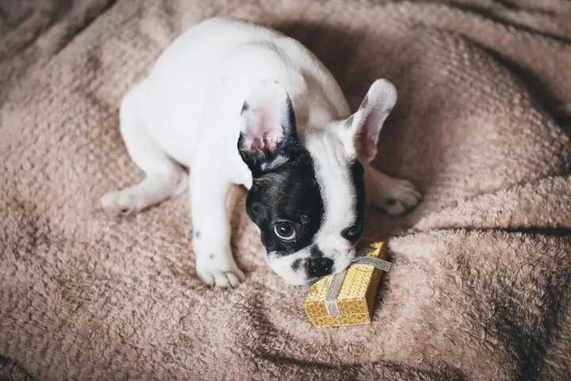
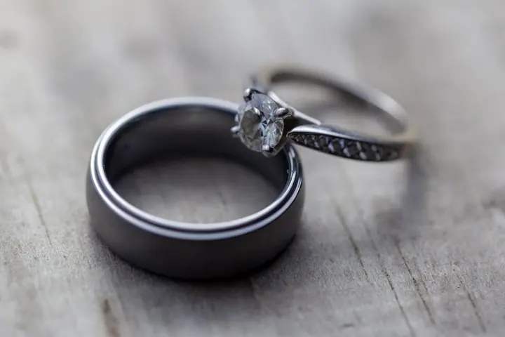
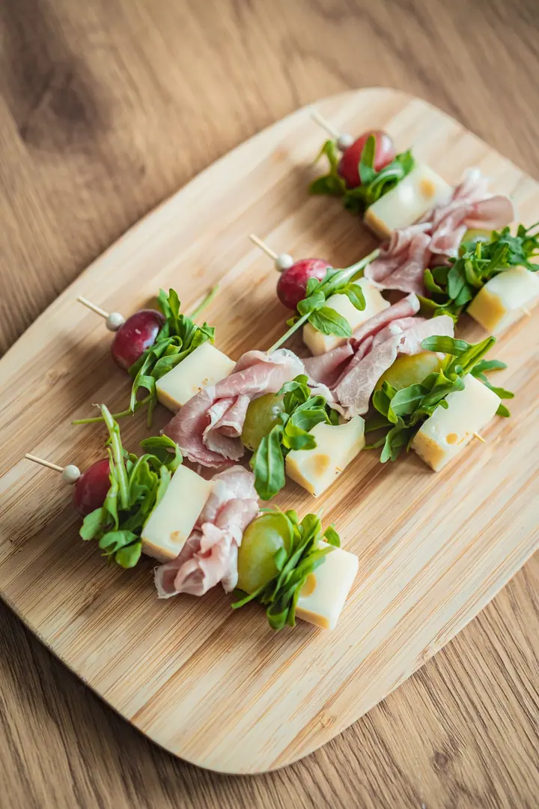
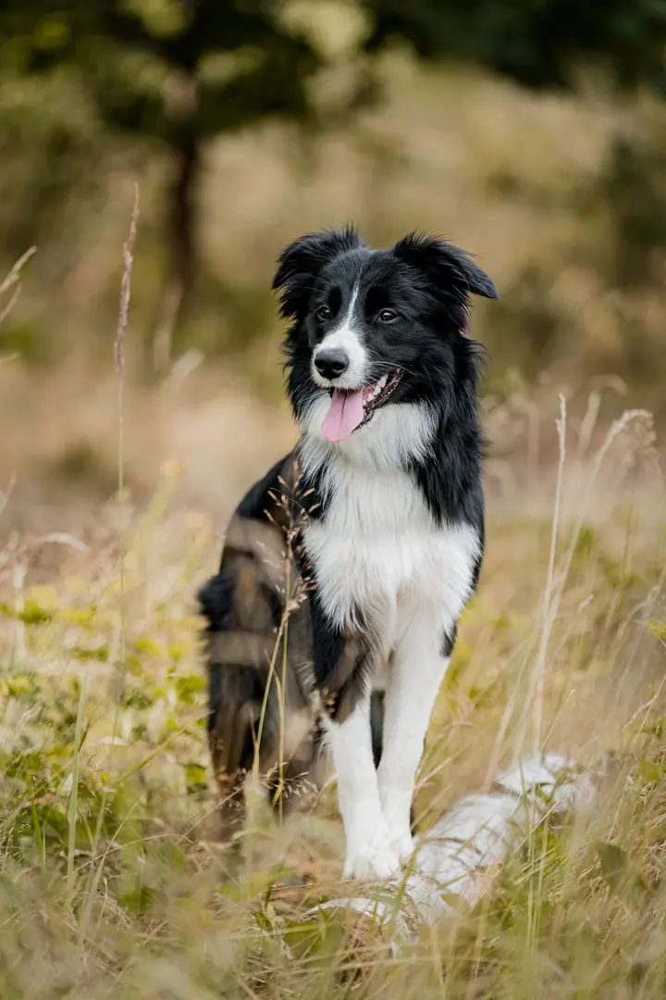

01 / 04
Svatby a páry
Svatby jsou to, čemu se věnuji nejvíc. Fotím i párová focení, třeba před svatbou nebo jen tak pro vás dva.
Zeptat se na termín→






Fotím lásku, rodiny i čtyřnohé parťáky
Zeptat se na termín →(01) Ahoj
Jmenuji se Eliška Kadlecová a fotím v Lanškrouně a okolí. Nejvíc se věnuji svatbám a párům , ráda ale fotím i rodiny a zvířata . Pro firmy fotím akce, interiéry a produkty.
(02) Co fotím
01 / 04
Svatby jsou to, čemu se věnuji nejvíc. Fotím i párová focení, třeba před svatbou nebo jen tak pro vás dva.
Zeptat se na termín→02 / 04
Fotím celé rodiny i portréty jednotlivců, nejraději venku v přírodě. Rodinné focení i portréty začínají na 1 500 Kč.
Zeptat se na termín→03 / 04
Fotím psy, koně i další zvířecí parťáky, nejčastěji venku při západu slunce. Focení zvířat začíná na 1 500 Kč.
Zeptat se na termín→Dále nabízím
Pro firmy fotím akce a společenské večery, interiéry, nemovitosti a produkty. Realitní focení začíná na 1 500 Kč.
↗(04) Postup
Od první zprávy po hotovou galerii.
Krok 1 z 4
Napište nebo zavolejte, co byste chtěli nafotit a kdy. Ověřím, jestli mám termín volný.
Krok 2 z 4
Probereme místo, čas a vaše představy. U focení venku vybereme denní dobu s hezkým světlem.
Krok 3 z 4
Na focení nikam nespěcháme. Nechám vás být sami sebou a jen vás občas nasměruji.
Krok 4 z 4
Fotky pečlivě vyberu a upravím a pošlu vám je v online galerii.
Nejhezčí světlo přichází těsně před západem slunce
(05) Za objektivem
Fotím v Lanškrouně a po Pardubickém kraji. Mým hlavním zaměřením jsou svatby, a když je vás víc, tak třeba celé rodiny na louce za domem.
Nejraději fotím venku v přirozeném světle, ideálně v podvečer, kdy je slunce nízko a všechno dostane teplou barvu. Ať jde o pár, babičku s vnučkami nebo psa ve vysoké trávě, chci, aby fotky působily přirozeně a vy jste se na nich poznali.
Kromě lidí a zvířat fotím i pro firmy: společenské akce, restaurace a byty na prodej, produkty i firemní portréty. Kdybyste si nebyli jistí, co z toho potřebujete, napište mi a domluvíme se.
Eliška
Eliška Kadlecová · Svatební, rodinná a komerční fotografka
Rodinné focení, portréty, focení zvířat i realitní focení začínají na 1 500 Kč. Cenu svatby nebo akce vám ráda spočítám podle toho, co budete potřebovat.
Sídlím v Lanškrouně a fotím hlavně v Pardubickém kraji. Pokud jste dál, napište mi a domluvíme se.
Ano, focení zvířat mám moc ráda. Zvířatům dáme čas a fotíme venku, kde se cítí dobře.
Ano. Fotím firemní akce, interiéry a nemovitosti, produkty i firemní portréty.
(07) Kontakt
Napište pár vět o tom, co si představujete, a termín, který se vám hodí.